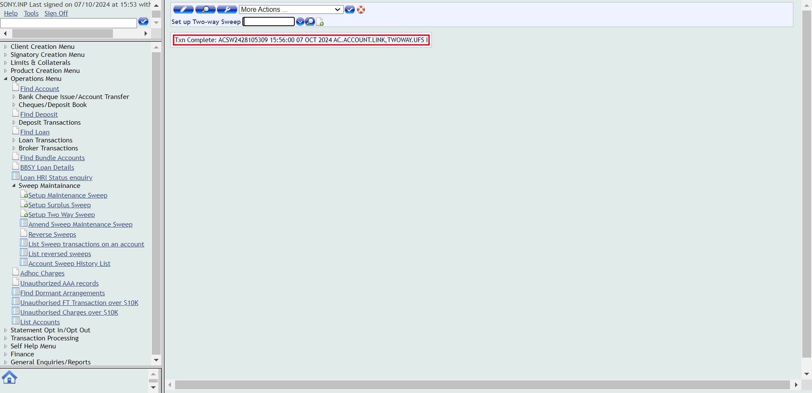
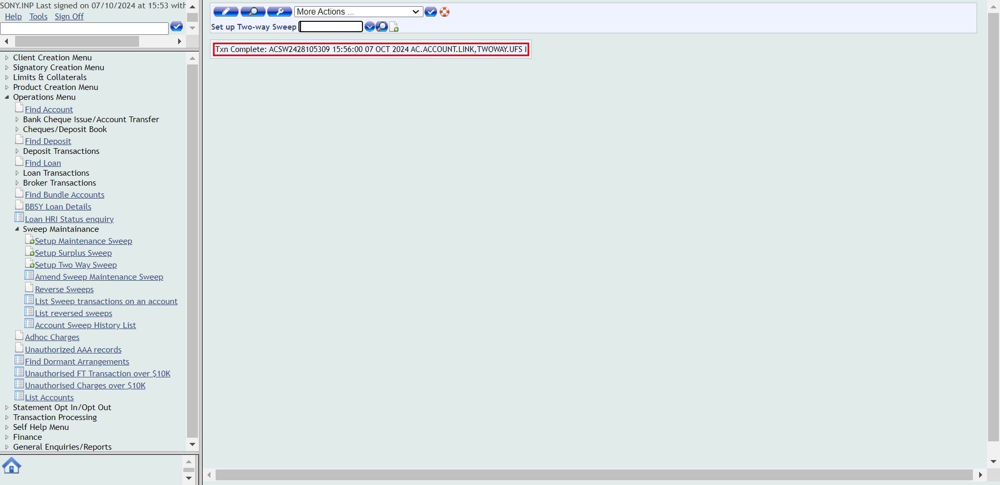
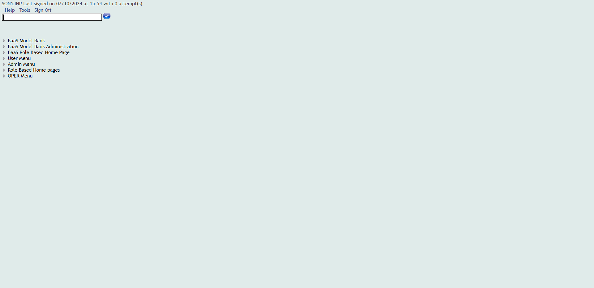
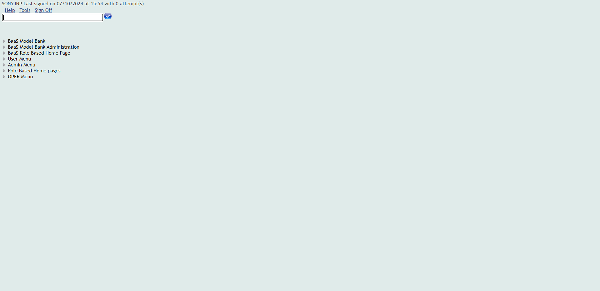

-
Payment
10:21:19 AM / 40:16:685 Fail
Payment
10.07.2024 10:21:19 10.07.2024 10:31:36 40:16:685 · #test-id=2PassBalance Maintanance sweep transferWhen close all the other opened windowsWhen User opens the T24 Url Then User should be able to login to T24
Then User should be able to login to T24 Then The user should be able to fill the commandlineAnd navigate to find account optionThen open the account that balance maintenance sweep transfer need to be appliedAnd reverse sweep transfer if any Sweep transfer is there and switch back to main menuThen navigate to operations menuAnd click on sweep maintainanceThen click on setup maintenance sweepAnd Enter the details for balance maintenance sweepThen Click on validateAnd Click on commitThen Verify whether the transaction complete message is displayed after commiting
Then The user should be able to fill the commandlineAnd navigate to find account optionThen open the account that balance maintenance sweep transfer need to be appliedAnd reverse sweep transfer if any Sweep transfer is there and switch back to main menuThen navigate to operations menuAnd click on sweep maintainanceThen click on setup maintenance sweepAnd Enter the details for balance maintenance sweepThen Click on validateAnd Click on commitThen Verify whether the transaction complete message is displayed after commiting And navigate to find account optionThen open the account that balance maintenance sweep transfer need to be appliedAnd verify that balance maintenance sweep transfer is reflected in the overview pagePassSurplus sweep transferWhen close all the other opened windowsWhen User opens the T24 Url
And navigate to find account optionThen open the account that balance maintenance sweep transfer need to be appliedAnd verify that balance maintenance sweep transfer is reflected in the overview pagePassSurplus sweep transferWhen close all the other opened windowsWhen User opens the T24 Url Then User should be able to login to T24
Then User should be able to login to T24 Then The user should be able to fill the commandlineAnd navigate to find account optionThen open the account that surplus sweep transfer need to be appliedAnd reverse sweep transfer if any Sweep transfer is there and switch back to main menuThen navigate to operations menuAnd click on sweep maintainanceThen click on setup surplus sweepAnd Enter the details for surplus sweepThen Click on validateAnd Click on commitThen Verify whether the transaction complete message is displayed after commiting
Then The user should be able to fill the commandlineAnd navigate to find account optionThen open the account that surplus sweep transfer need to be appliedAnd reverse sweep transfer if any Sweep transfer is there and switch back to main menuThen navigate to operations menuAnd click on sweep maintainanceThen click on setup surplus sweepAnd Enter the details for surplus sweepThen Click on validateAnd Click on commitThen Verify whether the transaction complete message is displayed after commiting And navigate to find account optionThen open the account that surplus sweep transfer need to be appliedAnd verify that Surplus sweep transfer is reflected in the overview pagePassTwo way sweep transfer SurplusWhen close all the other opened windowsWhen User opens the T24 Url
And navigate to find account optionThen open the account that surplus sweep transfer need to be appliedAnd verify that Surplus sweep transfer is reflected in the overview pagePassTwo way sweep transfer SurplusWhen close all the other opened windowsWhen User opens the T24 Url Then User should be able to login to T24Then The user should be able to fill the commandlineAnd navigate to find account optionThen open the account that Two way sweep transfer-surplus need to be appliedAnd reverse sweep transfer if any Sweep transfer is there and switch back to main menuThen navigate to operations menuAnd click on sweep maintainanceThen click on Setup Two Way SweepAnd Enter the details Two way sweep surplusThen Click on validateAnd Click on commitThen Verify whether the transaction complete message is displayed after commitingAnd navigate to find account optionThen open the account that Two way sweep transfer-surplus need to be appliedAnd verify that Two way sweep transfer-surplus is reflected in the overview pagePassTwo way sweep transfer Balance maintenanceWhen close all the other opened windowsWhen User opens the T24 Url
Then User should be able to login to T24Then The user should be able to fill the commandlineAnd navigate to find account optionThen open the account that Two way sweep transfer-surplus need to be appliedAnd reverse sweep transfer if any Sweep transfer is there and switch back to main menuThen navigate to operations menuAnd click on sweep maintainanceThen click on Setup Two Way SweepAnd Enter the details Two way sweep surplusThen Click on validateAnd Click on commitThen Verify whether the transaction complete message is displayed after commitingAnd navigate to find account optionThen open the account that Two way sweep transfer-surplus need to be appliedAnd verify that Two way sweep transfer-surplus is reflected in the overview pagePassTwo way sweep transfer Balance maintenanceWhen close all the other opened windowsWhen User opens the T24 Url Then User should be able to login to T24Then The user should be able to fill the commandlineAnd navigate to find account optionThen open the account that Two way sweep transfer-BalanceMaintenance need to be appliedAnd reverse sweep transfer if any Sweep transfer is there and switch back to main menuThen navigate to operations menuAnd click on sweep maintainanceThen click on Setup Two Way SweepAnd Enter the details Two way sweep BalanceMaintenanceThen Click on validateAnd Click on commitThen Verify whether the transaction complete message is displayed after commiting
Then User should be able to login to T24Then The user should be able to fill the commandlineAnd navigate to find account optionThen open the account that Two way sweep transfer-BalanceMaintenance need to be appliedAnd reverse sweep transfer if any Sweep transfer is there and switch back to main menuThen navigate to operations menuAnd click on sweep maintainanceThen click on Setup Two Way SweepAnd Enter the details Two way sweep BalanceMaintenanceThen Click on validateAnd Click on commitThen Verify whether the transaction complete message is displayed after commiting And navigate to find account optionThen open the account that Two way sweep transfer-BalanceMaintenance need to be appliedAnd verify that Two way sweep transfer-BalanceMaintenance is reflected in the overview pageFailAccount creationWhen close all the other opened windowsWhen User opens the T24 Url
And navigate to find account optionThen open the account that Two way sweep transfer-BalanceMaintenance need to be appliedAnd verify that Two way sweep transfer-BalanceMaintenance is reflected in the overview pageFailAccount creationWhen close all the other opened windowsWhen User opens the T24 Url Then User should be able to login to T24Then The user should be able to fill the commandlineAnd Navigate to Product catalogThen Click on At call investment church Account New Arrangement buttonAnd Enter the customer number for creating At call Investment church in the customer fieldThen Click on validateAnd Select the account mandate recordAnd Click on commit the deal for creating accountThen Verify whether the transaction complete message is displayed after commitingcom.frameium.stepdef.Ufs.IBPayments.afterStep(io.cucumber.java.Scenario)com.frameium.stepdef.Hooks.afterEveryStep(io.cucumber.java.Scenario)And switch back to main windowStep skippedThen The user should be able to fill the commandlineStep skippedThen navigate to find account optionStep skippedAnd open the newly created accountStep skippedThen Verify the newly created accountStep skippedFailAccount creationWhen close all the other opened windowscom.frameium.stepdef.Ufs.IBPayments.afterStep(io.cucumber.java.Scenario)com.frameium.stepdef.Hooks.afterEveryStep(io.cucumber.java.Scenario)When User opens the T24 UrlStep skippedThen User should be able to login to T24Step skippedThen The user should be able to fill the commandlineStep skippedAnd Navigate to Product catalogStep skippedThen Click on At call investment church Account New Arrangement buttonStep skippedAnd Enter the customer number for creating At call Investment church in the customer fieldStep skippedThen Click on validateStep skippedAnd Select the account mandate recordStep skippedAnd Click on commit the deal for creating accountStep skippedThen Verify whether the transaction complete message is displayed after commitingStep skippedAnd switch back to main windowStep skippedThen The user should be able to fill the commandlineStep skippedThen navigate to find account optionStep skippedAnd open the newly created accountStep skippedThen Verify the newly created accountStep skippedFailAccount closureWhen close all the other opened windowscom.frameium.stepdef.Ufs.IBPayments.afterStep(io.cucumber.java.Scenario)com.frameium.stepdef.Hooks.afterEveryStep(io.cucumber.java.Scenario)When User opens the T24 UrlStep skippedThen User should be able to login to T24Step skippedThen The user should be able to fill the commandlineStep skippedAnd navigate to find account optionStep skippedThen open the account for performing closureStep skippedAnd click on perform closureStep skippedThen Click on validateStep skippedAnd Click on commitStep skippedThen click on accept overrideStep skippedThen Verify whether the transaction complete message is displayedStep skippedAnd switch back to main windowStep skippedThen The user should be able to fill the commandlineStep skippedThen navigate to find account optionStep skippedThen open the account for performing closureStep skippedAnd Verify whether the account status changed to Pending ClosureStep skippedFailAccount closureWhen close all the other opened windowscom.frameium.stepdef.Ufs.IBPayments.afterStep(io.cucumber.java.Scenario)com.frameium.stepdef.Hooks.afterEveryStep(io.cucumber.java.Scenario)When User opens the T24 UrlStep skippedThen User should be able to login to T24Step skippedThen The user should be able to fill the commandlineStep skippedAnd navigate to find account optionStep skippedThen open the account for performing closureStep skippedAnd click on perform closureStep skippedThen Click on validateStep skippedAnd Click on commitStep skippedThen click on accept overrideStep skippedThen Verify whether the transaction complete message is displayedStep skippedAnd switch back to main windowStep skippedThen The user should be able to fill the commandlineStep skippedThen navigate to find account optionStep skippedThen open the account for performing closureStep skippedAnd Verify whether the account status changed to Pending ClosureStep skippedFailDeposit CreationWhen close all the other opened windowscom.frameium.stepdef.Ufs.IBPayments.afterStep(io.cucumber.java.Scenario)com.frameium.stepdef.Hooks.afterEveryStep(io.cucumber.java.Scenario)When User opens the T24 UrlStep skippedThen User should be able to login to T24Step skippedThen The user should be able to fill the commandlineStep skippedAnd Navigate to Product catalogStep skippedThen click on fixed Term non churchStep skippedAnd fill the customer number in customer fieldStep skippedThen Click on validateStep skippedThen Enter the commitment amountStep skippedAnd provide the rollover periodStep skippedThen Enter the payout detailsStep skippedThen Click on validateStep skippedAnd Click on commit for deposit creationStep skippedThen click on accept overrideStep skippedThen Verify whether the transaction complete message is displayedStep skippedAnd switch back to main windowStep skippedThen The user should be able to fill the commandlineStep skippedAnd navigate to find deposit optionStep skippedThen open the newly created depositStep skippedThen Verify the newly created depositStep skippedAnd switch back to main windowStep skippedThen The user should be able to fill the commandlineStep skippedThen The user should be able to navigate to Account transfer buttonStep skippedAnd Enter the details in the account transfer fields for deposit fundingStep skippedThen Click on validateStep skippedAnd Click on commitStep skippedThen Verify whether the transaction complete message is displayed after commitingStep skippedFailDeposit CreationWhen close all the other opened windowscom.frameium.stepdef.Ufs.IBPayments.afterStep(io.cucumber.java.Scenario)com.frameium.stepdef.Hooks.afterEveryStep(io.cucumber.java.Scenario)When User opens the T24 UrlStep skippedThen User should be able to login to T24Step skippedThen The user should be able to fill the commandlineStep skippedAnd Navigate to Product catalogStep skippedThen click on fixed Term non churchStep skippedAnd fill the customer number in customer fieldStep skippedThen Click on validateStep skippedThen Enter the commitment amountStep skippedAnd provide the rollover periodStep skippedThen Enter the payout detailsStep skippedThen Click on validateStep skippedAnd Click on commit for deposit creationStep skippedThen click on accept overrideStep skippedThen Verify whether the transaction complete message is displayedStep skippedAnd switch back to main windowStep skippedThen The user should be able to fill the commandlineStep skippedAnd navigate to find deposit optionStep skippedThen open the newly created depositStep skippedThen Verify the newly created depositStep skippedAnd switch back to main windowStep skippedThen The user should be able to fill the commandlineStep skippedThen The user should be able to navigate to Account transfer buttonStep skippedAnd Enter the details in the account transfer fields for deposit fundingStep skippedThen Click on validateStep skippedAnd Click on commitStep skippedThen Verify whether the transaction complete message is displayed after commitingStep skippedFailDeposit ClosureWhen close all the other opened windowscom.frameium.stepdef.Ufs.IBPayments.afterStep(io.cucumber.java.Scenario)com.frameium.stepdef.Hooks.afterEveryStep(io.cucumber.java.Scenario)When User opens the T24 UrlStep skippedThen User should be able to login to T24Step skippedThen The user should be able to fill the commandlineStep skippedAnd navigate to find deposit for deposit closureStep skippedThen open the newly created depositStep skippedAnd Click on Redeem DepositStep skippedThen from the newly opened window select the reason for account closureStep skippedThen Click on validateStep skippedAnd Enter the deposit payout detailsStep skippedThen Click on validateStep skippedAnd Click on commitStep skippedThen click on accept overrideStep skippedThen Verify whether the transaction complete message is displayed after redeem depositStep skippedAnd verify simulation status becomes Completed - SuccessfullyStep skippedAnd switch back to main windowStep skippedThen The user should be able to fill the commandlineStep skippedAnd navigate to find deposit for deposit closureStep skippedThen open the newly created depositStep skippedAnd click on redemptionstatementStep skippedThen perform the deposit redemptionStep skippedThen Click on validateStep skippedAnd Enter the deposit payout detailsStep skippedThen Click on validateStep skippedAnd Click on commitStep skippedThen click on accept overrideStep skippedThen Verify whether the transaction complete message is displayedStep skippedAnd switch back to main windowStep skippedThen The user should be able to fill the commandlineStep skippedAnd navigate to find deposit for deposit closureStep skippedThen open the deposit for closureStep skippedAnd verify the deposit closureStep skippedFailDeposit ClosureWhen close all the other opened windowscom.frameium.stepdef.Ufs.IBPayments.afterStep(io.cucumber.java.Scenario)com.frameium.stepdef.Hooks.afterEveryStep(io.cucumber.java.Scenario)When User opens the T24 UrlStep skippedThen User should be able to login to T24Step skippedThen The user should be able to fill the commandlineStep skippedAnd navigate to find deposit for deposit closureStep skippedThen open the newly created depositStep skippedAnd Click on Redeem DepositStep skippedThen from the newly opened window select the reason for account closureStep skippedThen Click on validateStep skippedAnd Enter the deposit payout detailsStep skippedThen Click on validateStep skippedAnd Click on commitStep skippedThen click on accept overrideStep skippedThen Verify whether the transaction complete message is displayed after redeem depositStep skippedAnd verify simulation status becomes Completed - SuccessfullyStep skippedAnd switch back to main windowStep skippedThen The user should be able to fill the commandlineStep skippedAnd navigate to find deposit for deposit closureStep skippedThen open the newly created depositStep skippedAnd click on redemptionstatementStep skippedThen perform the deposit redemptionStep skippedThen Click on validateStep skippedAnd Enter the deposit payout detailsStep skippedThen Click on validateStep skippedAnd Click on commitStep skippedThen click on accept overrideStep skippedThen Verify whether the transaction complete message is displayedStep skippedAnd switch back to main windowStep skippedThen The user should be able to fill the commandlineStep skippedAnd navigate to find deposit for deposit closureStep skippedThen open the deposit for closureStep skippedAnd verify the deposit closureStep skippedFailLoan CreationWhen close all the other opened windowscom.frameium.stepdef.Ufs.IBPayments.afterStep(io.cucumber.java.Scenario)com.frameium.stepdef.Hooks.afterEveryStep(io.cucumber.java.Scenario)When User opens the T24 UrlStep skippedThen User should be able to login to T24Step skippedThen The user should be able to fill the commandlineStep skippedAnd Navigate to Product catalogStep skippedThen click on commercial loan New ArrangementStep skippedAnd fill the customer number in customer fieldStep skippedThen Click on validateStep skippedAnd Provide the loan interest detailsStep skippedThen enter the commitment amount and termStep skippedAnd Select the account mandate recordStep skippedThen Click on validate after entering loan detailsStep skippedAnd Click on commitStep skippedThen Verify whether the transaction complete message is displayedStep skippedAnd switch back to main windowStep skippedAnd The User clicks on signoffStep skippedThen Login to authoriser accountStep skippedThen The user should be able to fill the commandlineStep skippedAnd user should be able to navigate to find unauthorised loanStep skippedThen open the newly created loanStep skippedAnd authorise the loanStep skippedThen Verify whether the transaction complete message is displayedStep skippedAnd switch back to main windowStep skippedThen The user should be able to fill the commandlineStep skippedAnd user should be able to navigate to find loanStep skippedThen open the newly created loanStep skippedThen verify the newly created loanStep skippedFailLoan CreationWhen close all the other opened windowscom.frameium.stepdef.Ufs.IBPayments.afterStep(io.cucumber.java.Scenario)com.frameium.stepdef.Hooks.afterEveryStep(io.cucumber.java.Scenario)When User opens the T24 UrlStep skippedThen User should be able to login to T24Step skippedThen The user should be able to fill the commandlineStep skippedAnd Navigate to Product catalogStep skippedThen click on commercial loan New ArrangementStep skippedAnd fill the customer number in customer fieldStep skippedThen Click on validateStep skippedAnd Provide the loan interest detailsStep skippedThen enter the commitment amount and termStep skippedAnd Select the account mandate recordStep skippedThen Click on validate after entering loan detailsStep skippedAnd Click on commitStep skippedThen Verify whether the transaction complete message is displayedStep skippedAnd switch back to main windowStep skippedAnd The User clicks on signoffStep skippedThen Login to authoriser accountStep skippedThen The user should be able to fill the commandlineStep skippedAnd user should be able to navigate to find unauthorised loanStep skippedThen open the newly created loanStep skippedAnd authorise the loanStep skippedThen Verify whether the transaction complete message is displayedStep skippedAnd switch back to main windowStep skippedThen The user should be able to fill the commandlineStep skippedAnd user should be able to navigate to find loanStep skippedThen open the newly created loanStep skippedThen verify the newly created loanStep skippedFailLoan ClosureWhen close all the other opened windowscom.frameium.stepdef.Ufs.IBPayments.afterStep(io.cucumber.java.Scenario)com.frameium.stepdef.Hooks.afterEveryStep(io.cucumber.java.Scenario)When User opens the T24 UrlStep skippedThen User should be able to login to T24Step skippedThen The user should be able to fill the commandlineStep skippedAnd user should be able to navigate to find loanStep skippedThen open the loan that need to be closedStep skippedAnd Click on desbursementStep skippedThen Enter the desbursement details for loanStep skippedThen Click on validateStep skippedAnd Click on commitStep skippedThen click on accept overrideStep skippedThen Verify whether the transaction complete message is displayedStep skippedThen switch back to main windowStep skippedAnd The User clicks on signoffStep skippedThen Login to authoriser accountStep skippedThen The user should be able to fill the commandlineStep skippedAnd user should be able to navigate to find loanStep skippedThen open the loan that need to be closedStep skippedAnd Authorise the desbusement for the loanStep skippedThen switch back to main windowStep skippedAnd The User clicks on signoffStep skippedThen User should be able to login to T24Step skippedThen The user should be able to fill the commandlineStep skippedAnd user should be able to navigate to find loanStep skippedThen open the loan that need to be closedStep skippedAnd Click on request payoffStep skippedThen from the newly opened window select the reason for loan closureStep skippedThen Click on validateStep skippedAnd Click on commitStep skippedAnd verify simulation status becomes Executed - SuccessfullyStep skippedThen switch back to main windowStep skippedThen The user should be able to fill the commandlineStep skippedAnd user should be able to navigate to find loanStep skippedThen open the loan that need to be closedStep skippedThen click on the payoff statement from overfiew screen of loanStep skippedThen switch back to main windowStep skippedThen The user should be able to fill the commandlineStep skippedAnd user should be able to navigate to find loanStep skippedThen open the loan that need to be closedStep skippedAnd click on loan payoffStep skippedThen Enter the loan payoff detailsStep skippedThen Click on validateStep skippedAnd Click on commitStep skippedThen click on accept overrideStep skippedThen Verify whether the transaction complete message is displayedStep skippedThen switch back to main windowStep skippedThen The user should be able to fill the commandlineStep skippedAnd user should be able to navigate to find loanStep skippedThen open the loan that need to be closedStep skippedAnd verify whether the loan status is moved to pending closureStep skippedFailLoan ClosureWhen close all the other opened windowscom.frameium.stepdef.Ufs.IBPayments.afterStep(io.cucumber.java.Scenario)com.frameium.stepdef.Hooks.afterEveryStep(io.cucumber.java.Scenario)When User opens the T24 UrlStep skippedThen User should be able to login to T24Step skippedThen The user should be able to fill the commandlineStep skippedAnd user should be able to navigate to find loanStep skippedThen open the loan that need to be closedStep skippedAnd Click on desbursementStep skippedThen Enter the desbursement details for loanStep skippedThen Click on validateStep skippedAnd Click on commitStep skippedThen click on accept overrideStep skippedThen Verify whether the transaction complete message is displayedStep skippedThen switch back to main windowStep skippedAnd The User clicks on signoffStep skippedThen Login to authoriser accountStep skippedThen The user should be able to fill the commandlineStep skippedAnd user should be able to navigate to find loanStep skippedThen open the loan that need to be closedStep skippedAnd Authorise the desbusement for the loanStep skippedThen switch back to main windowStep skippedAnd The User clicks on signoffStep skippedThen User should be able to login to T24Step skippedThen The user should be able to fill the commandlineStep skippedAnd user should be able to navigate to find loanStep skippedThen open the loan that need to be closedStep skippedAnd Click on request payoffStep skippedThen from the newly opened window select the reason for loan closureStep skippedThen Click on validateStep skippedAnd Click on commitStep skippedAnd verify simulation status becomes Executed - SuccessfullyStep skippedThen switch back to main windowStep skippedThen The user should be able to fill the commandlineStep skippedAnd user should be able to navigate to find loanStep skippedThen open the loan that need to be closedStep skippedThen click on the payoff statement from overfiew screen of loanStep skippedThen switch back to main windowStep skippedThen The user should be able to fill the commandlineStep skippedAnd user should be able to navigate to find loanStep skippedThen open the loan that need to be closedStep skippedAnd click on loan payoffStep skippedThen Enter the loan payoff detailsStep skippedThen Click on validateStep skippedAnd Click on commitStep skippedThen click on accept overrideStep skippedThen Verify whether the transaction complete message is displayedStep skippedThen switch back to main windowStep skippedThen The user should be able to fill the commandlineStep skippedAnd user should be able to navigate to find loanStep skippedThen open the loan that need to be closedStep skippedAnd verify whether the loan status is moved to pending closureStep skippedFailDeposit partial withdrawalWhen close all the other opened windowscom.frameium.stepdef.Ufs.IBPayments.afterStep(io.cucumber.java.Scenario)com.frameium.stepdef.Hooks.afterEveryStep(io.cucumber.java.Scenario)When User opens the T24 UrlStep skippedThen User should be able to login to T24Step skippedThen The user should be able to fill the commandlineStep skippedAnd navigate to find deposit option for partial wthdrawalStep skippedThen open the depositStep skippedAnd click on Partial withdrawalStep skippedThen Enter the partial withdrawal amountStep skippedThen Click on validateStep skippedAnd Click on commitStep skippedThen click on accept overrideStep skippedThen Verify whether the transaction complete message is displayedStep skippedAnd verify simulation status becomes Completed - SuccessfullyStep skippedThen switch back to main windowStep skippedThen The user should be able to fill the commandlineStep skippedAnd navigate to find deposit option for partial wthdrawalStep skippedThen open the depositStep skippedAnd Click on the withdrawal statementStep skippedThen Proceed to partial withdrawalStep skippedThen Click on validateStep skippedAnd Click on commitStep skippedThen click on accept overrideStep skippedThen Verify whether the transaction complete message is displayedStep skippedThen switch back to main windowStep skippedThen The user should be able to fill the commandlineStep skippedAnd click on the IB-view of account entriesStep skippedThen Enter the account number of deposit in the IB view of account entriesStep skippedAnd Enter the date in ibview formatStep skippedAnd click on find buttonStep skippedThen Check the narratives of Partial WithdrawalStep skippedFailDeposit partial withdrawalWhen close all the other opened windowscom.frameium.stepdef.Ufs.IBPayments.afterStep(io.cucumber.java.Scenario)com.frameium.stepdef.Hooks.afterEveryStep(io.cucumber.java.Scenario)When User opens the T24 UrlStep skippedThen User should be able to login to T24Step skippedThen The user should be able to fill the commandlineStep skippedAnd navigate to find deposit option for partial wthdrawalStep skippedThen open the depositStep skippedAnd click on Partial withdrawalStep skippedThen Enter the partial withdrawal amountStep skippedThen Click on validateStep skippedAnd Click on commitStep skippedThen click on accept overrideStep skippedThen Verify whether the transaction complete message is displayedStep skippedAnd verify simulation status becomes Completed - SuccessfullyStep skippedThen switch back to main windowStep skippedThen The user should be able to fill the commandlineStep skippedAnd navigate to find deposit option for partial wthdrawalStep skippedThen open the depositStep skippedAnd Click on the withdrawal statementStep skippedThen Proceed to partial withdrawalStep skippedThen Click on validateStep skippedAnd Click on commitStep skippedThen click on accept overrideStep skippedThen Verify whether the transaction complete message is displayedStep skippedThen switch back to main windowStep skippedThen The user should be able to fill the commandlineStep skippedAnd click on the IB-view of account entriesStep skippedThen Enter the account number of deposit in the IB view of account entriesStep skippedAnd Enter the date in ibview formatStep skippedAnd click on find buttonStep skippedThen Check the narratives of Partial WithdrawalStep skippedFailDirect DebitWhen close all the other opened windowscom.frameium.stepdef.Ufs.IBPayments.afterStep(io.cucumber.java.Scenario)com.frameium.stepdef.Hooks.afterEveryStep(io.cucumber.java.Scenario)When User opens the T24 UrlStep skippedThen User should be able to login to T24Step skippedThen The user should be able to fill the commandlineStep skippedAnd navigate to find account optionStep skippedThen open the account for posting Direct DebitStep skippedAnd click on Direct DebitStep skippedThen Enter the details of direct debitStep skippedThen Click on validateStep skippedAnd Click on commitStep skippedAnd Click on commitStep skippedThen Verify whether the transaction complete message is displayed after committing DDStep skippedFailDirect DebitWhen close all the other opened windowscom.frameium.stepdef.Ufs.IBPayments.afterStep(io.cucumber.java.Scenario)com.frameium.stepdef.Hooks.afterEveryStep(io.cucumber.java.Scenario)When User opens the T24 UrlStep skippedThen User should be able to login to T24Step skippedThen The user should be able to fill the commandlineStep skippedAnd navigate to find account optionStep skippedThen open the account for posting Direct DebitStep skippedAnd click on Direct DebitStep skippedThen Enter the details of direct debitStep skippedThen Click on validateStep skippedAnd Click on commitStep skippedAnd Click on commitStep skippedThen Verify whether the transaction complete message is displayed after committing DDStep skippedFailLoan repaymentWhen close all the other opened windowscom.frameium.stepdef.Ufs.IBPayments.afterStep(io.cucumber.java.Scenario)com.frameium.stepdef.Hooks.afterEveryStep(io.cucumber.java.Scenario)When User opens the T24 UrlStep skippedThen User should be able to login to T24Step skippedThen The user should be able to fill the commandlineStep skippedAnd user should be able to navigate to find loanStep skippedAnd open the account that need to perform the loan repaymentStep skippedThen click on repayment buttonStep skippedAnd enter the repayment detailsStep skippedThen Click on validateStep skippedAnd Click on commitStep skippedThen click on accept overrideStep skippedThen Verify whether the transaction complete message is displayedStep skippedThen switch back to main windowStep skippedThen The user should be able to fill the commandlineStep skippedAnd The user should be able to click on general enquiries buttomStep skippedAnd click on the IB-view of account entriesStep skippedThen Enter the account number of Loan repayment in the IB-view of account entriesStep skippedFailLoan repaymentWhen close all the other opened windowscom.frameium.stepdef.Ufs.IBPayments.afterStep(io.cucumber.java.Scenario)com.frameium.stepdef.Hooks.afterEveryStep(io.cucumber.java.Scenario)When User opens the T24 UrlStep skippedThen User should be able to login to T24Step skippedThen The user should be able to fill the commandlineStep skippedAnd user should be able to navigate to find loanStep skippedAnd open the account that need to perform the loan repaymentStep skippedThen click on repayment buttonStep skippedAnd enter the repayment detailsStep skippedThen Click on validateStep skippedAnd Click on commitStep skippedThen click on accept overrideStep skippedThen Verify whether the transaction complete message is displayedStep skippedThen switch back to main windowStep skippedThen The user should be able to fill the commandlineStep skippedAnd The user should be able to click on general enquiries buttomStep skippedAnd click on the IB-view of account entriesStep skippedThen Enter the account number of Loan repayment in the IB-view of account entriesStep skipped
Then User should be able to login to T24Then The user should be able to fill the commandlineAnd Navigate to Product catalogThen Click on At call investment church Account New Arrangement buttonAnd Enter the customer number for creating At call Investment church in the customer fieldThen Click on validateAnd Select the account mandate recordAnd Click on commit the deal for creating accountThen Verify whether the transaction complete message is displayed after commitingcom.frameium.stepdef.Ufs.IBPayments.afterStep(io.cucumber.java.Scenario)com.frameium.stepdef.Hooks.afterEveryStep(io.cucumber.java.Scenario)And switch back to main windowStep skippedThen The user should be able to fill the commandlineStep skippedThen navigate to find account optionStep skippedAnd open the newly created accountStep skippedThen Verify the newly created accountStep skippedFailAccount creationWhen close all the other opened windowscom.frameium.stepdef.Ufs.IBPayments.afterStep(io.cucumber.java.Scenario)com.frameium.stepdef.Hooks.afterEveryStep(io.cucumber.java.Scenario)When User opens the T24 UrlStep skippedThen User should be able to login to T24Step skippedThen The user should be able to fill the commandlineStep skippedAnd Navigate to Product catalogStep skippedThen Click on At call investment church Account New Arrangement buttonStep skippedAnd Enter the customer number for creating At call Investment church in the customer fieldStep skippedThen Click on validateStep skippedAnd Select the account mandate recordStep skippedAnd Click on commit the deal for creating accountStep skippedThen Verify whether the transaction complete message is displayed after commitingStep skippedAnd switch back to main windowStep skippedThen The user should be able to fill the commandlineStep skippedThen navigate to find account optionStep skippedAnd open the newly created accountStep skippedThen Verify the newly created accountStep skippedFailAccount closureWhen close all the other opened windowscom.frameium.stepdef.Ufs.IBPayments.afterStep(io.cucumber.java.Scenario)com.frameium.stepdef.Hooks.afterEveryStep(io.cucumber.java.Scenario)When User opens the T24 UrlStep skippedThen User should be able to login to T24Step skippedThen The user should be able to fill the commandlineStep skippedAnd navigate to find account optionStep skippedThen open the account for performing closureStep skippedAnd click on perform closureStep skippedThen Click on validateStep skippedAnd Click on commitStep skippedThen click on accept overrideStep skippedThen Verify whether the transaction complete message is displayedStep skippedAnd switch back to main windowStep skippedThen The user should be able to fill the commandlineStep skippedThen navigate to find account optionStep skippedThen open the account for performing closureStep skippedAnd Verify whether the account status changed to Pending ClosureStep skippedFailAccount closureWhen close all the other opened windowscom.frameium.stepdef.Ufs.IBPayments.afterStep(io.cucumber.java.Scenario)com.frameium.stepdef.Hooks.afterEveryStep(io.cucumber.java.Scenario)When User opens the T24 UrlStep skippedThen User should be able to login to T24Step skippedThen The user should be able to fill the commandlineStep skippedAnd navigate to find account optionStep skippedThen open the account for performing closureStep skippedAnd click on perform closureStep skippedThen Click on validateStep skippedAnd Click on commitStep skippedThen click on accept overrideStep skippedThen Verify whether the transaction complete message is displayedStep skippedAnd switch back to main windowStep skippedThen The user should be able to fill the commandlineStep skippedThen navigate to find account optionStep skippedThen open the account for performing closureStep skippedAnd Verify whether the account status changed to Pending ClosureStep skippedFailDeposit CreationWhen close all the other opened windowscom.frameium.stepdef.Ufs.IBPayments.afterStep(io.cucumber.java.Scenario)com.frameium.stepdef.Hooks.afterEveryStep(io.cucumber.java.Scenario)When User opens the T24 UrlStep skippedThen User should be able to login to T24Step skippedThen The user should be able to fill the commandlineStep skippedAnd Navigate to Product catalogStep skippedThen click on fixed Term non churchStep skippedAnd fill the customer number in customer fieldStep skippedThen Click on validateStep skippedThen Enter the commitment amountStep skippedAnd provide the rollover periodStep skippedThen Enter the payout detailsStep skippedThen Click on validateStep skippedAnd Click on commit for deposit creationStep skippedThen click on accept overrideStep skippedThen Verify whether the transaction complete message is displayedStep skippedAnd switch back to main windowStep skippedThen The user should be able to fill the commandlineStep skippedAnd navigate to find deposit optionStep skippedThen open the newly created depositStep skippedThen Verify the newly created depositStep skippedAnd switch back to main windowStep skippedThen The user should be able to fill the commandlineStep skippedThen The user should be able to navigate to Account transfer buttonStep skippedAnd Enter the details in the account transfer fields for deposit fundingStep skippedThen Click on validateStep skippedAnd Click on commitStep skippedThen Verify whether the transaction complete message is displayed after commitingStep skippedFailDeposit CreationWhen close all the other opened windowscom.frameium.stepdef.Ufs.IBPayments.afterStep(io.cucumber.java.Scenario)com.frameium.stepdef.Hooks.afterEveryStep(io.cucumber.java.Scenario)When User opens the T24 UrlStep skippedThen User should be able to login to T24Step skippedThen The user should be able to fill the commandlineStep skippedAnd Navigate to Product catalogStep skippedThen click on fixed Term non churchStep skippedAnd fill the customer number in customer fieldStep skippedThen Click on validateStep skippedThen Enter the commitment amountStep skippedAnd provide the rollover periodStep skippedThen Enter the payout detailsStep skippedThen Click on validateStep skippedAnd Click on commit for deposit creationStep skippedThen click on accept overrideStep skippedThen Verify whether the transaction complete message is displayedStep skippedAnd switch back to main windowStep skippedThen The user should be able to fill the commandlineStep skippedAnd navigate to find deposit optionStep skippedThen open the newly created depositStep skippedThen Verify the newly created depositStep skippedAnd switch back to main windowStep skippedThen The user should be able to fill the commandlineStep skippedThen The user should be able to navigate to Account transfer buttonStep skippedAnd Enter the details in the account transfer fields for deposit fundingStep skippedThen Click on validateStep skippedAnd Click on commitStep skippedThen Verify whether the transaction complete message is displayed after commitingStep skippedFailDeposit ClosureWhen close all the other opened windowscom.frameium.stepdef.Ufs.IBPayments.afterStep(io.cucumber.java.Scenario)com.frameium.stepdef.Hooks.afterEveryStep(io.cucumber.java.Scenario)When User opens the T24 UrlStep skippedThen User should be able to login to T24Step skippedThen The user should be able to fill the commandlineStep skippedAnd navigate to find deposit for deposit closureStep skippedThen open the newly created depositStep skippedAnd Click on Redeem DepositStep skippedThen from the newly opened window select the reason for account closureStep skippedThen Click on validateStep skippedAnd Enter the deposit payout detailsStep skippedThen Click on validateStep skippedAnd Click on commitStep skippedThen click on accept overrideStep skippedThen Verify whether the transaction complete message is displayed after redeem depositStep skippedAnd verify simulation status becomes Completed - SuccessfullyStep skippedAnd switch back to main windowStep skippedThen The user should be able to fill the commandlineStep skippedAnd navigate to find deposit for deposit closureStep skippedThen open the newly created depositStep skippedAnd click on redemptionstatementStep skippedThen perform the deposit redemptionStep skippedThen Click on validateStep skippedAnd Enter the deposit payout detailsStep skippedThen Click on validateStep skippedAnd Click on commitStep skippedThen click on accept overrideStep skippedThen Verify whether the transaction complete message is displayedStep skippedAnd switch back to main windowStep skippedThen The user should be able to fill the commandlineStep skippedAnd navigate to find deposit for deposit closureStep skippedThen open the deposit for closureStep skippedAnd verify the deposit closureStep skippedFailDeposit ClosureWhen close all the other opened windowscom.frameium.stepdef.Ufs.IBPayments.afterStep(io.cucumber.java.Scenario)com.frameium.stepdef.Hooks.afterEveryStep(io.cucumber.java.Scenario)When User opens the T24 UrlStep skippedThen User should be able to login to T24Step skippedThen The user should be able to fill the commandlineStep skippedAnd navigate to find deposit for deposit closureStep skippedThen open the newly created depositStep skippedAnd Click on Redeem DepositStep skippedThen from the newly opened window select the reason for account closureStep skippedThen Click on validateStep skippedAnd Enter the deposit payout detailsStep skippedThen Click on validateStep skippedAnd Click on commitStep skippedThen click on accept overrideStep skippedThen Verify whether the transaction complete message is displayed after redeem depositStep skippedAnd verify simulation status becomes Completed - SuccessfullyStep skippedAnd switch back to main windowStep skippedThen The user should be able to fill the commandlineStep skippedAnd navigate to find deposit for deposit closureStep skippedThen open the newly created depositStep skippedAnd click on redemptionstatementStep skippedThen perform the deposit redemptionStep skippedThen Click on validateStep skippedAnd Enter the deposit payout detailsStep skippedThen Click on validateStep skippedAnd Click on commitStep skippedThen click on accept overrideStep skippedThen Verify whether the transaction complete message is displayedStep skippedAnd switch back to main windowStep skippedThen The user should be able to fill the commandlineStep skippedAnd navigate to find deposit for deposit closureStep skippedThen open the deposit for closureStep skippedAnd verify the deposit closureStep skippedFailLoan CreationWhen close all the other opened windowscom.frameium.stepdef.Ufs.IBPayments.afterStep(io.cucumber.java.Scenario)com.frameium.stepdef.Hooks.afterEveryStep(io.cucumber.java.Scenario)When User opens the T24 UrlStep skippedThen User should be able to login to T24Step skippedThen The user should be able to fill the commandlineStep skippedAnd Navigate to Product catalogStep skippedThen click on commercial loan New ArrangementStep skippedAnd fill the customer number in customer fieldStep skippedThen Click on validateStep skippedAnd Provide the loan interest detailsStep skippedThen enter the commitment amount and termStep skippedAnd Select the account mandate recordStep skippedThen Click on validate after entering loan detailsStep skippedAnd Click on commitStep skippedThen Verify whether the transaction complete message is displayedStep skippedAnd switch back to main windowStep skippedAnd The User clicks on signoffStep skippedThen Login to authoriser accountStep skippedThen The user should be able to fill the commandlineStep skippedAnd user should be able to navigate to find unauthorised loanStep skippedThen open the newly created loanStep skippedAnd authorise the loanStep skippedThen Verify whether the transaction complete message is displayedStep skippedAnd switch back to main windowStep skippedThen The user should be able to fill the commandlineStep skippedAnd user should be able to navigate to find loanStep skippedThen open the newly created loanStep skippedThen verify the newly created loanStep skippedFailLoan CreationWhen close all the other opened windowscom.frameium.stepdef.Ufs.IBPayments.afterStep(io.cucumber.java.Scenario)com.frameium.stepdef.Hooks.afterEveryStep(io.cucumber.java.Scenario)When User opens the T24 UrlStep skippedThen User should be able to login to T24Step skippedThen The user should be able to fill the commandlineStep skippedAnd Navigate to Product catalogStep skippedThen click on commercial loan New ArrangementStep skippedAnd fill the customer number in customer fieldStep skippedThen Click on validateStep skippedAnd Provide the loan interest detailsStep skippedThen enter the commitment amount and termStep skippedAnd Select the account mandate recordStep skippedThen Click on validate after entering loan detailsStep skippedAnd Click on commitStep skippedThen Verify whether the transaction complete message is displayedStep skippedAnd switch back to main windowStep skippedAnd The User clicks on signoffStep skippedThen Login to authoriser accountStep skippedThen The user should be able to fill the commandlineStep skippedAnd user should be able to navigate to find unauthorised loanStep skippedThen open the newly created loanStep skippedAnd authorise the loanStep skippedThen Verify whether the transaction complete message is displayedStep skippedAnd switch back to main windowStep skippedThen The user should be able to fill the commandlineStep skippedAnd user should be able to navigate to find loanStep skippedThen open the newly created loanStep skippedThen verify the newly created loanStep skippedFailLoan ClosureWhen close all the other opened windowscom.frameium.stepdef.Ufs.IBPayments.afterStep(io.cucumber.java.Scenario)com.frameium.stepdef.Hooks.afterEveryStep(io.cucumber.java.Scenario)When User opens the T24 UrlStep skippedThen User should be able to login to T24Step skippedThen The user should be able to fill the commandlineStep skippedAnd user should be able to navigate to find loanStep skippedThen open the loan that need to be closedStep skippedAnd Click on desbursementStep skippedThen Enter the desbursement details for loanStep skippedThen Click on validateStep skippedAnd Click on commitStep skippedThen click on accept overrideStep skippedThen Verify whether the transaction complete message is displayedStep skippedThen switch back to main windowStep skippedAnd The User clicks on signoffStep skippedThen Login to authoriser accountStep skippedThen The user should be able to fill the commandlineStep skippedAnd user should be able to navigate to find loanStep skippedThen open the loan that need to be closedStep skippedAnd Authorise the desbusement for the loanStep skippedThen switch back to main windowStep skippedAnd The User clicks on signoffStep skippedThen User should be able to login to T24Step skippedThen The user should be able to fill the commandlineStep skippedAnd user should be able to navigate to find loanStep skippedThen open the loan that need to be closedStep skippedAnd Click on request payoffStep skippedThen from the newly opened window select the reason for loan closureStep skippedThen Click on validateStep skippedAnd Click on commitStep skippedAnd verify simulation status becomes Executed - SuccessfullyStep skippedThen switch back to main windowStep skippedThen The user should be able to fill the commandlineStep skippedAnd user should be able to navigate to find loanStep skippedThen open the loan that need to be closedStep skippedThen click on the payoff statement from overfiew screen of loanStep skippedThen switch back to main windowStep skippedThen The user should be able to fill the commandlineStep skippedAnd user should be able to navigate to find loanStep skippedThen open the loan that need to be closedStep skippedAnd click on loan payoffStep skippedThen Enter the loan payoff detailsStep skippedThen Click on validateStep skippedAnd Click on commitStep skippedThen click on accept overrideStep skippedThen Verify whether the transaction complete message is displayedStep skippedThen switch back to main windowStep skippedThen The user should be able to fill the commandlineStep skippedAnd user should be able to navigate to find loanStep skippedThen open the loan that need to be closedStep skippedAnd verify whether the loan status is moved to pending closureStep skippedFailLoan ClosureWhen close all the other opened windowscom.frameium.stepdef.Ufs.IBPayments.afterStep(io.cucumber.java.Scenario)com.frameium.stepdef.Hooks.afterEveryStep(io.cucumber.java.Scenario)When User opens the T24 UrlStep skippedThen User should be able to login to T24Step skippedThen The user should be able to fill the commandlineStep skippedAnd user should be able to navigate to find loanStep skippedThen open the loan that need to be closedStep skippedAnd Click on desbursementStep skippedThen Enter the desbursement details for loanStep skippedThen Click on validateStep skippedAnd Click on commitStep skippedThen click on accept overrideStep skippedThen Verify whether the transaction complete message is displayedStep skippedThen switch back to main windowStep skippedAnd The User clicks on signoffStep skippedThen Login to authoriser accountStep skippedThen The user should be able to fill the commandlineStep skippedAnd user should be able to navigate to find loanStep skippedThen open the loan that need to be closedStep skippedAnd Authorise the desbusement for the loanStep skippedThen switch back to main windowStep skippedAnd The User clicks on signoffStep skippedThen User should be able to login to T24Step skippedThen The user should be able to fill the commandlineStep skippedAnd user should be able to navigate to find loanStep skippedThen open the loan that need to be closedStep skippedAnd Click on request payoffStep skippedThen from the newly opened window select the reason for loan closureStep skippedThen Click on validateStep skippedAnd Click on commitStep skippedAnd verify simulation status becomes Executed - SuccessfullyStep skippedThen switch back to main windowStep skippedThen The user should be able to fill the commandlineStep skippedAnd user should be able to navigate to find loanStep skippedThen open the loan that need to be closedStep skippedThen click on the payoff statement from overfiew screen of loanStep skippedThen switch back to main windowStep skippedThen The user should be able to fill the commandlineStep skippedAnd user should be able to navigate to find loanStep skippedThen open the loan that need to be closedStep skippedAnd click on loan payoffStep skippedThen Enter the loan payoff detailsStep skippedThen Click on validateStep skippedAnd Click on commitStep skippedThen click on accept overrideStep skippedThen Verify whether the transaction complete message is displayedStep skippedThen switch back to main windowStep skippedThen The user should be able to fill the commandlineStep skippedAnd user should be able to navigate to find loanStep skippedThen open the loan that need to be closedStep skippedAnd verify whether the loan status is moved to pending closureStep skippedFailDeposit partial withdrawalWhen close all the other opened windowscom.frameium.stepdef.Ufs.IBPayments.afterStep(io.cucumber.java.Scenario)com.frameium.stepdef.Hooks.afterEveryStep(io.cucumber.java.Scenario)When User opens the T24 UrlStep skippedThen User should be able to login to T24Step skippedThen The user should be able to fill the commandlineStep skippedAnd navigate to find deposit option for partial wthdrawalStep skippedThen open the depositStep skippedAnd click on Partial withdrawalStep skippedThen Enter the partial withdrawal amountStep skippedThen Click on validateStep skippedAnd Click on commitStep skippedThen click on accept overrideStep skippedThen Verify whether the transaction complete message is displayedStep skippedAnd verify simulation status becomes Completed - SuccessfullyStep skippedThen switch back to main windowStep skippedThen The user should be able to fill the commandlineStep skippedAnd navigate to find deposit option for partial wthdrawalStep skippedThen open the depositStep skippedAnd Click on the withdrawal statementStep skippedThen Proceed to partial withdrawalStep skippedThen Click on validateStep skippedAnd Click on commitStep skippedThen click on accept overrideStep skippedThen Verify whether the transaction complete message is displayedStep skippedThen switch back to main windowStep skippedThen The user should be able to fill the commandlineStep skippedAnd click on the IB-view of account entriesStep skippedThen Enter the account number of deposit in the IB view of account entriesStep skippedAnd Enter the date in ibview formatStep skippedAnd click on find buttonStep skippedThen Check the narratives of Partial WithdrawalStep skippedFailDeposit partial withdrawalWhen close all the other opened windowscom.frameium.stepdef.Ufs.IBPayments.afterStep(io.cucumber.java.Scenario)com.frameium.stepdef.Hooks.afterEveryStep(io.cucumber.java.Scenario)When User opens the T24 UrlStep skippedThen User should be able to login to T24Step skippedThen The user should be able to fill the commandlineStep skippedAnd navigate to find deposit option for partial wthdrawalStep skippedThen open the depositStep skippedAnd click on Partial withdrawalStep skippedThen Enter the partial withdrawal amountStep skippedThen Click on validateStep skippedAnd Click on commitStep skippedThen click on accept overrideStep skippedThen Verify whether the transaction complete message is displayedStep skippedAnd verify simulation status becomes Completed - SuccessfullyStep skippedThen switch back to main windowStep skippedThen The user should be able to fill the commandlineStep skippedAnd navigate to find deposit option for partial wthdrawalStep skippedThen open the depositStep skippedAnd Click on the withdrawal statementStep skippedThen Proceed to partial withdrawalStep skippedThen Click on validateStep skippedAnd Click on commitStep skippedThen click on accept overrideStep skippedThen Verify whether the transaction complete message is displayedStep skippedThen switch back to main windowStep skippedThen The user should be able to fill the commandlineStep skippedAnd click on the IB-view of account entriesStep skippedThen Enter the account number of deposit in the IB view of account entriesStep skippedAnd Enter the date in ibview formatStep skippedAnd click on find buttonStep skippedThen Check the narratives of Partial WithdrawalStep skippedFailDirect DebitWhen close all the other opened windowscom.frameium.stepdef.Ufs.IBPayments.afterStep(io.cucumber.java.Scenario)com.frameium.stepdef.Hooks.afterEveryStep(io.cucumber.java.Scenario)When User opens the T24 UrlStep skippedThen User should be able to login to T24Step skippedThen The user should be able to fill the commandlineStep skippedAnd navigate to find account optionStep skippedThen open the account for posting Direct DebitStep skippedAnd click on Direct DebitStep skippedThen Enter the details of direct debitStep skippedThen Click on validateStep skippedAnd Click on commitStep skippedAnd Click on commitStep skippedThen Verify whether the transaction complete message is displayed after committing DDStep skippedFailDirect DebitWhen close all the other opened windowscom.frameium.stepdef.Ufs.IBPayments.afterStep(io.cucumber.java.Scenario)com.frameium.stepdef.Hooks.afterEveryStep(io.cucumber.java.Scenario)When User opens the T24 UrlStep skippedThen User should be able to login to T24Step skippedThen The user should be able to fill the commandlineStep skippedAnd navigate to find account optionStep skippedThen open the account for posting Direct DebitStep skippedAnd click on Direct DebitStep skippedThen Enter the details of direct debitStep skippedThen Click on validateStep skippedAnd Click on commitStep skippedAnd Click on commitStep skippedThen Verify whether the transaction complete message is displayed after committing DDStep skippedFailLoan repaymentWhen close all the other opened windowscom.frameium.stepdef.Ufs.IBPayments.afterStep(io.cucumber.java.Scenario)com.frameium.stepdef.Hooks.afterEveryStep(io.cucumber.java.Scenario)When User opens the T24 UrlStep skippedThen User should be able to login to T24Step skippedThen The user should be able to fill the commandlineStep skippedAnd user should be able to navigate to find loanStep skippedAnd open the account that need to perform the loan repaymentStep skippedThen click on repayment buttonStep skippedAnd enter the repayment detailsStep skippedThen Click on validateStep skippedAnd Click on commitStep skippedThen click on accept overrideStep skippedThen Verify whether the transaction complete message is displayedStep skippedThen switch back to main windowStep skippedThen The user should be able to fill the commandlineStep skippedAnd The user should be able to click on general enquiries buttomStep skippedAnd click on the IB-view of account entriesStep skippedThen Enter the account number of Loan repayment in the IB-view of account entriesStep skippedFailLoan repaymentWhen close all the other opened windowscom.frameium.stepdef.Ufs.IBPayments.afterStep(io.cucumber.java.Scenario)com.frameium.stepdef.Hooks.afterEveryStep(io.cucumber.java.Scenario)When User opens the T24 UrlStep skippedThen User should be able to login to T24Step skippedThen The user should be able to fill the commandlineStep skippedAnd user should be able to navigate to find loanStep skippedAnd open the account that need to perform the loan repaymentStep skippedThen click on repayment buttonStep skippedAnd enter the repayment detailsStep skippedThen Click on validateStep skippedAnd Click on commitStep skippedThen click on accept overrideStep skippedThen Verify whether the transaction complete message is displayedStep skippedThen switch back to main windowStep skippedThen The user should be able to fill the commandlineStep skippedAnd The user should be able to click on general enquiries buttomStep skippedAnd click on the IB-view of account entriesStep skippedThen Enter the account number of Loan repayment in the IB-view of account entriesStep skipped
-
org.openqa.selenium.WebDriverException
1 tests
org.openqa.selenium.WebDriverException
1 failedStatus Timestamp TestName Fail 10:29:30 AM Then Verify whether the transaction complete message is displayed after commiting Payment.Account creation.Then Verify whether the transaction complete message is displayed after commitingFail 10:31:05 AM com.frameium.stepdef.Ufs.IBPayments.afterStep(io.cucumber.java.Scenario) Payment.Account creation.com.frameium.stepdef.Ufs.IBPayments.afterStep(io.cucumber.java.Scenario)Fail 10:31:05 AM com.frameium.stepdef.Hooks.afterEveryStep(io.cucumber.java.Scenario) Payment.Account creation.com.frameium.stepdef.Hooks.afterEveryStep(io.cucumber.java.Scenario)Fail 10:31:07 AM When close all the other opened windows Payment.Account creation.When close all the other opened windowsFail 10:31:08 AM com.frameium.stepdef.Ufs.IBPayments.afterStep(io.cucumber.java.Scenario) Payment.Account creation.com.frameium.stepdef.Ufs.IBPayments.afterStep(io.cucumber.java.Scenario)Fail 10:31:08 AM com.frameium.stepdef.Hooks.afterEveryStep(io.cucumber.java.Scenario) Payment.Account creation.com.frameium.stepdef.Hooks.afterEveryStep(io.cucumber.java.Scenario)Fail 10:31:09 AM When close all the other opened windows Payment.Account closure.When close all the other opened windowsFail 10:31:10 AM com.frameium.stepdef.Ufs.IBPayments.afterStep(io.cucumber.java.Scenario) Payment.Account closure.com.frameium.stepdef.Ufs.IBPayments.afterStep(io.cucumber.java.Scenario)Fail 10:31:10 AM com.frameium.stepdef.Hooks.afterEveryStep(io.cucumber.java.Scenario) Payment.Account closure.com.frameium.stepdef.Hooks.afterEveryStep(io.cucumber.java.Scenario)Fail 10:31:11 AM When close all the other opened windows Payment.Account closure.When close all the other opened windowsFail 10:31:12 AM com.frameium.stepdef.Ufs.IBPayments.afterStep(io.cucumber.java.Scenario) Payment.Account closure.com.frameium.stepdef.Ufs.IBPayments.afterStep(io.cucumber.java.Scenario)Fail 10:31:12 AM com.frameium.stepdef.Hooks.afterEveryStep(io.cucumber.java.Scenario) Payment.Account closure.com.frameium.stepdef.Hooks.afterEveryStep(io.cucumber.java.Scenario)Fail 10:31:12 AM When close all the other opened windows Payment.Deposit Creation.When close all the other opened windowsFail 10:31:13 AM com.frameium.stepdef.Ufs.IBPayments.afterStep(io.cucumber.java.Scenario) Payment.Deposit Creation.com.frameium.stepdef.Ufs.IBPayments.afterStep(io.cucumber.java.Scenario)Fail 10:31:13 AM com.frameium.stepdef.Hooks.afterEveryStep(io.cucumber.java.Scenario) Payment.Deposit Creation.com.frameium.stepdef.Hooks.afterEveryStep(io.cucumber.java.Scenario)Fail 10:31:14 AM When close all the other opened windows Payment.Deposit Creation.When close all the other opened windowsFail 10:31:15 AM com.frameium.stepdef.Ufs.IBPayments.afterStep(io.cucumber.java.Scenario) Payment.Deposit Creation.com.frameium.stepdef.Ufs.IBPayments.afterStep(io.cucumber.java.Scenario)Fail 10:31:15 AM com.frameium.stepdef.Hooks.afterEveryStep(io.cucumber.java.Scenario) Payment.Deposit Creation.com.frameium.stepdef.Hooks.afterEveryStep(io.cucumber.java.Scenario)Fail 10:31:16 AM When close all the other opened windows Payment.Deposit Closure.When close all the other opened windowsFail 10:31:17 AM com.frameium.stepdef.Ufs.IBPayments.afterStep(io.cucumber.java.Scenario) Payment.Deposit Closure.com.frameium.stepdef.Ufs.IBPayments.afterStep(io.cucumber.java.Scenario)Fail 10:31:17 AM com.frameium.stepdef.Hooks.afterEveryStep(io.cucumber.java.Scenario) Payment.Deposit Closure.com.frameium.stepdef.Hooks.afterEveryStep(io.cucumber.java.Scenario)Fail 10:31:19 AM When close all the other opened windows Payment.Deposit Closure.When close all the other opened windowsFail 10:31:20 AM com.frameium.stepdef.Ufs.IBPayments.afterStep(io.cucumber.java.Scenario) Payment.Deposit Closure.com.frameium.stepdef.Ufs.IBPayments.afterStep(io.cucumber.java.Scenario)Fail 10:31:20 AM com.frameium.stepdef.Hooks.afterEveryStep(io.cucumber.java.Scenario) Payment.Deposit Closure.com.frameium.stepdef.Hooks.afterEveryStep(io.cucumber.java.Scenario)Fail 10:31:21 AM When close all the other opened windows Payment.Loan Creation.When close all the other opened windowsFail 10:31:22 AM com.frameium.stepdef.Ufs.IBPayments.afterStep(io.cucumber.java.Scenario) Payment.Loan Creation.com.frameium.stepdef.Ufs.IBPayments.afterStep(io.cucumber.java.Scenario)Fail 10:31:22 AM com.frameium.stepdef.Hooks.afterEveryStep(io.cucumber.java.Scenario) Payment.Loan Creation.com.frameium.stepdef.Hooks.afterEveryStep(io.cucumber.java.Scenario)Fail 10:31:22 AM When close all the other opened windows Payment.Loan Creation.When close all the other opened windowsFail 10:31:23 AM com.frameium.stepdef.Ufs.IBPayments.afterStep(io.cucumber.java.Scenario) Payment.Loan Creation.com.frameium.stepdef.Ufs.IBPayments.afterStep(io.cucumber.java.Scenario)Fail 10:31:23 AM com.frameium.stepdef.Hooks.afterEveryStep(io.cucumber.java.Scenario) Payment.Loan Creation.com.frameium.stepdef.Hooks.afterEveryStep(io.cucumber.java.Scenario)Fail 10:31:24 AM When close all the other opened windows Payment.Loan Closure.When close all the other opened windowsFail 10:31:25 AM com.frameium.stepdef.Ufs.IBPayments.afterStep(io.cucumber.java.Scenario) Payment.Loan Closure.com.frameium.stepdef.Ufs.IBPayments.afterStep(io.cucumber.java.Scenario)Fail 10:31:25 AM com.frameium.stepdef.Hooks.afterEveryStep(io.cucumber.java.Scenario) Payment.Loan Closure.com.frameium.stepdef.Hooks.afterEveryStep(io.cucumber.java.Scenario)Fail 10:31:25 AM When close all the other opened windows Payment.Loan Closure.When close all the other opened windowsFail 10:31:26 AM com.frameium.stepdef.Ufs.IBPayments.afterStep(io.cucumber.java.Scenario) Payment.Loan Closure.com.frameium.stepdef.Ufs.IBPayments.afterStep(io.cucumber.java.Scenario)Fail 10:31:26 AM com.frameium.stepdef.Hooks.afterEveryStep(io.cucumber.java.Scenario) Payment.Loan Closure.com.frameium.stepdef.Hooks.afterEveryStep(io.cucumber.java.Scenario)Fail 10:31:27 AM When close all the other opened windows Payment.Deposit partial withdrawal.When close all the other opened windowsFail 10:31:28 AM com.frameium.stepdef.Ufs.IBPayments.afterStep(io.cucumber.java.Scenario) Payment.Deposit partial withdrawal.com.frameium.stepdef.Ufs.IBPayments.afterStep(io.cucumber.java.Scenario)Fail 10:31:28 AM com.frameium.stepdef.Hooks.afterEveryStep(io.cucumber.java.Scenario) Payment.Deposit partial withdrawal.com.frameium.stepdef.Hooks.afterEveryStep(io.cucumber.java.Scenario)Fail 10:31:28 AM When close all the other opened windows Payment.Deposit partial withdrawal.When close all the other opened windowsFail 10:31:29 AM com.frameium.stepdef.Ufs.IBPayments.afterStep(io.cucumber.java.Scenario) Payment.Deposit partial withdrawal.com.frameium.stepdef.Ufs.IBPayments.afterStep(io.cucumber.java.Scenario)Fail 10:31:29 AM com.frameium.stepdef.Hooks.afterEveryStep(io.cucumber.java.Scenario) Payment.Deposit partial withdrawal.com.frameium.stepdef.Hooks.afterEveryStep(io.cucumber.java.Scenario)Fail 10:31:30 AM When close all the other opened windows Payment.Direct Debit.When close all the other opened windowsFail 10:31:31 AM com.frameium.stepdef.Ufs.IBPayments.afterStep(io.cucumber.java.Scenario) Payment.Direct Debit.com.frameium.stepdef.Ufs.IBPayments.afterStep(io.cucumber.java.Scenario)Fail 10:31:31 AM com.frameium.stepdef.Hooks.afterEveryStep(io.cucumber.java.Scenario) Payment.Direct Debit.com.frameium.stepdef.Hooks.afterEveryStep(io.cucumber.java.Scenario)Fail 10:31:31 AM When close all the other opened windows Payment.Direct Debit.When close all the other opened windowsFail 10:31:32 AM com.frameium.stepdef.Ufs.IBPayments.afterStep(io.cucumber.java.Scenario) Payment.Direct Debit.com.frameium.stepdef.Ufs.IBPayments.afterStep(io.cucumber.java.Scenario)Fail 10:31:32 AM com.frameium.stepdef.Hooks.afterEveryStep(io.cucumber.java.Scenario) Payment.Direct Debit.com.frameium.stepdef.Hooks.afterEveryStep(io.cucumber.java.Scenario)Fail 10:31:33 AM When close all the other opened windows Payment.Loan repayment.When close all the other opened windowsFail 10:31:34 AM com.frameium.stepdef.Ufs.IBPayments.afterStep(io.cucumber.java.Scenario) Payment.Loan repayment.com.frameium.stepdef.Ufs.IBPayments.afterStep(io.cucumber.java.Scenario)Fail 10:31:34 AM com.frameium.stepdef.Hooks.afterEveryStep(io.cucumber.java.Scenario) Payment.Loan repayment.com.frameium.stepdef.Hooks.afterEveryStep(io.cucumber.java.Scenario)Fail 10:31:35 AM When close all the other opened windows Payment.Loan repayment.When close all the other opened windowsFail 10:31:36 AM com.frameium.stepdef.Ufs.IBPayments.afterStep(io.cucumber.java.Scenario) Payment.Loan repayment.com.frameium.stepdef.Ufs.IBPayments.afterStep(io.cucumber.java.Scenario)Fail 10:31:36 AM com.frameium.stepdef.Hooks.afterEveryStep(io.cucumber.java.Scenario) Payment.Loan repayment.com.frameium.stepdef.Hooks.afterEveryStep(io.cucumber.java.Scenario)
-
@beforeCOBScenarios1
22 tests
@beforeCOBScenarios1
4 passed 18 failedStatus Timestamp TestName Pass 10:21:19 AM Balance Maintanance sweep transfer Payment.Balance Maintanance sweep transferPass 10:23:06 AM Surplus sweep transfer Payment.Surplus sweep transferPass 10:24:43 AM Two way sweep transfer Surplus Payment.Two way sweep transfer SurplusPass 10:26:26 AM Two way sweep transfer Balance maintenance Payment.Two way sweep transfer Balance maintenanceFail 10:28:23 AM Account creation Payment.Account creationFail 10:31:06 AM Account creation Payment.Account creationFail 10:31:09 AM Account closure Payment.Account closureFail 10:31:10 AM Account closure Payment.Account closureFail 10:31:12 AM Deposit Creation Payment.Deposit CreationFail 10:31:14 AM Deposit Creation Payment.Deposit CreationFail 10:31:16 AM Deposit Closure Payment.Deposit ClosureFail 10:31:18 AM Deposit Closure Payment.Deposit ClosureFail 10:31:20 AM Loan Creation Payment.Loan CreationFail 10:31:22 AM Loan Creation Payment.Loan CreationFail 10:31:24 AM Loan Closure Payment.Loan ClosureFail 10:31:25 AM Loan Closure Payment.Loan ClosureFail 10:31:27 AM Deposit partial withdrawal Payment.Deposit partial withdrawalFail 10:31:28 AM Deposit partial withdrawal Payment.Deposit partial withdrawalFail 10:31:30 AM Direct Debit Payment.Direct DebitFail 10:31:31 AM Direct Debit Payment.Direct DebitFail 10:31:33 AM Loan repayment Payment.Loan repaymentFail 10:31:34 AM Loan repayment Payment.Loan repayment
Started
Oct 7, 2024 10:21:15 AM
Ended
Oct 7, 2024 10:31:36 AM
Features Passed
0
Features Failed
1
Features
Scenarios
Steps
Timeline
Tags
| Name | Passed | Failed | Skipped | Others | Passed % |
|---|---|---|---|---|---|
| @beforeCOBScenarios1 | 4 | 18 | 0 | 0 | 18.182% |